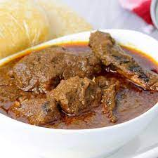

Banga Soup

DESCRIPTION
This is a well detailed recipe contaning all the necssary ingredients and a well explained step by step guide.
This recipe also sheds light on the right amount of heat and time that is required for each step.
INGREDIENTS
- Beef
- Onion
- Cameroon Pepper
- Seafood
- Habanero
- Palm Kernel
- Banga Spice
- Banga Spice leaves
- Banga Stick
- Dried Fish
- Salt
- Water/Stock
- Palm Oil
STEPS
- Rinse the meat, add the diced onions, cameroon pepper, seasoning powder and salt. Stir and leave to cook till meat becomes tender.
- Add the stockfish and cook for another 10 minutes.
- Remove the meat, stockfish and set aside the stock.
- Pour the palm nut concentrate inside the stock, put it on low heat,dilute with water and allow to boil until oil begins to float on it.
- Add the Banga spice, smoked fish, meat, seasoning powder salt, crayfish and banga stick. Cover and leave to cook on low heat for 10 minutes.
- Stir and add the leaves. Leave to simmer till thickened to your taste.
EXTRA RECIPES